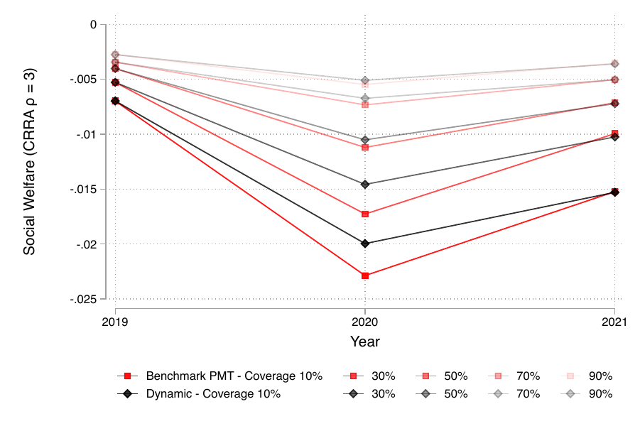
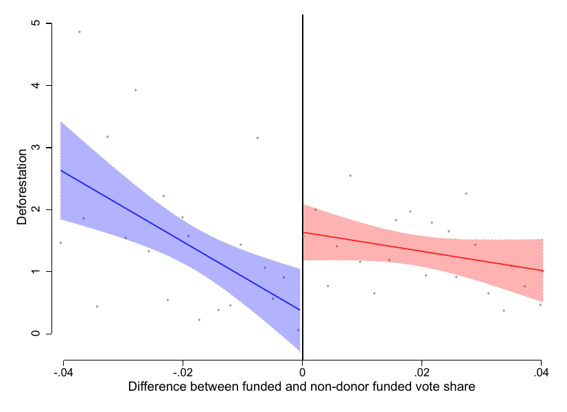
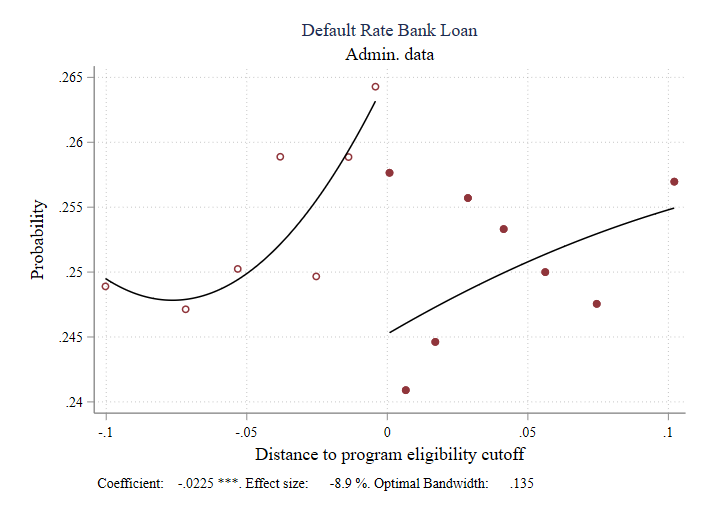

Publications
Shooting a Moving Target: Evaluating Targeting Tools for Social Programs When Income Fluctuates

Journal of Development Economics, Volume 172, January 2025, 103395
A key challenge for policymakers in low- and middle-income countries is to design a method to select beneficiaries of social programs when income is unobservable and volatile. We use a unique panel dataset of a random sample of households in Colombia's social registry that contains information before, during, and after the 2020 economic crisis to evaluate a traditional static proxy-means test (PMT) and three policy-relevant alternatives.
Journal link PDF Online AppendixBuying a Blind Eye: Campaign Donations, Regulatory Enforcement, and Deforestation

American Political Science Review, 2024, 118(2), 635-653.
[Originally Master's Thesis] While existing work has demonstrated that campaign donations can buy access to benefits such as favorable legislation and preferential contracting, we highlight another use of campaign contributions: buying reductions in regulatory enforcement. Specifically, we argue that in return for campaign contributions, Colombian mayors who rely on donor-funding (compared with those who do not) choose not to enforce sanctions against illegal deforestation activities.
Working Papers
Social Protection, Short-term Debt, and Access to Credit

R&R - American Economic Journal: Applied Economics.
We exploit an expansion in social protection to middle-income households to study how they cope with economic shocks and how to build their resilience. We use a regression discontinuity design around the eligibility cutoff for a program that delivered monthly cash transfers mainly through bank accounts in Colombia. We find no impacts on food security, education, and health outcomes—the target outcomes of antipoverty programs. In contrast, program eligibility increases non-food consumption and reduces debt for routine expenses.
WP PDF Slides ECINEQ (WP)Work in Progress
Healthcare Demand, Climate Adaptation, and the Welfare State
Policy and Other
Climate Change Adaptation and Development: A Conceptual Framework
IZA Discussion Paper No. 18464, March 2026
Climate change is reshaping the economic environment in which households make decisions, generating diverse adaptive responses and increasing the need for data that can guide effective policy. Yet current measurement efforts remain fragmented, reflecting two key gaps: limited systematic data on household adaptation and the lack of a structured framework to interpret it. This paper addresses both by developing a literature-informed framework for diagnosing household-level climate adaptation, focusing on adjustments in income-generating activities as a primary response to climate risk.
Impacts of the Ingreso Solidario program in the face of the COVID-19 crisis in Colombia
Inter-American Development Bank Technical Note
Original in Spanish: "Impactos del programa Ingreso Solidario frente a la crisis del COVID-19 en Colombia." In this document, we present the results of the evaluation of Ingreso Solidario in Colombia, an unconditional cash transfer program aimed at poor and vulnerable households that did not benefit from pre-existing programs before the pandemic.
View PDF